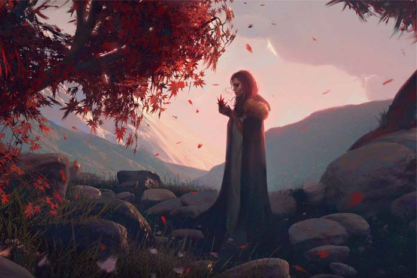

Witches
Written by U Than Pe ( Tour Guide )
Witches
Opinions, customs, principles passed down from generation to generation become traditions.Antiquity makes them sacrosanct.No amount of logic or argument can alter them.All scientific reasoning fail to convince the believers to accept the contrary view.One such belief is existence of witches in Myanmar society, especially in rural areas.
In every society there is a belief that some people have power to cast a spell on others who make them angry.In Myanmar society they are called (tsown) a male witch and tsownma a female witch tsown also means glowing eerity.There are many tales showing their power of black magic.
Witches are believed to have power to leave their body below neck at home and with head alone roam about at night especially on moonless nights.
It was a chilling tale when we heard it over 70 years ago.A wife left her headless body and went out.Her husband was prepared for her nightly loitering.He took a bowl of local shampoo and applied it to the stump of neck. When she returned the head could not rejoin the body.She, the head of course, cried and cried pathetically, with a promise never to repeat herself again.Most of us shivered and had no heart to enjoy the end.
In small towns and villages where nearly nine tenths of our people live witch stories circulate extensively.Natural phenomena like eerie light given out by phosphorescent insects, earthworms and rotting twigs on moonless night are always attributed to frolicking witches.Some senior witches can go up into the sky. Their head can reach the height measured with length of silk thread of one spool.Others can creat (mont-see-jaw) , a Myanmar delicacy out of a single human excrement.These are named (chee-zar-tsown) (they eat wasting from people :P), an excrement eating witch.
People believe that witches can cast a spell on people and make them laugh and weep alternately the whole day.They can make a child or infant cry non-stop.Usually an antisorcery healer (pa-yaw-ga-saya) has to be called in. Some people find a black skin patch usually on their thigh.They call if bitemark of a witch.They apply something, usually paste made of turmeric powder and water to the black patch of skin, and wait .They believe the witch will come to borrow the same, sooner or later.
Some witches are so powerful that healers can not handle them.There is a story of (Kyat-Kan Daw Ywe).One day a healer came to her village.The lady met him at the gate of the village. The healer asked the lady to take him to (Daw-Ywe) as he wanted to teach her a lesson.She pitifully stared at him and rearranged her nether garment. And,Lo! In her place there was a red-headed vulture.The healer turned and fled.He even ignored her to pick up his magic whip and anti-witchcraft paraphernalia.
Stories about Myanmar witches can be collected -- told (ad infinitum).Most of us knew they were not true but we enjoyed them all the same.We like present day generation to enjoy them.After all they preceded Harry Potter by many a century, didn't they? Now J.Rowland has taken the lead.